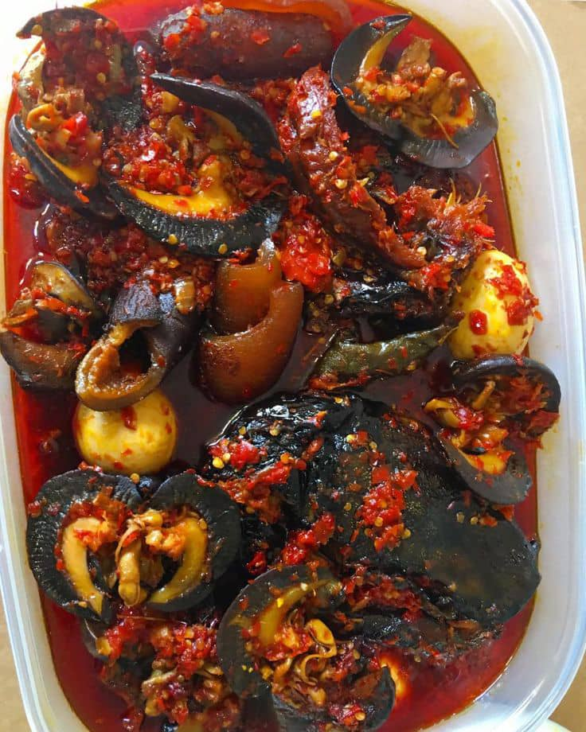

Eba and Vegetable Soup is a traditional Nigerian meal featuring soft eba served with a rich vegetable soup. The soup is prepared with fresh vegetables, pepper, spices and assorted protein.
It is a delicious and satisfying traditional meal suitable for lunch or dinner.
| Specification | Details |
|---|---|
| Food Name | Eba and Vegetable Soup |
| Category | Nigerian Food |
| Main Ingredients | Garri, vegetables, pepper, meat and spices |
| Serving Size | 1 plate |
| Price | N5,000 |